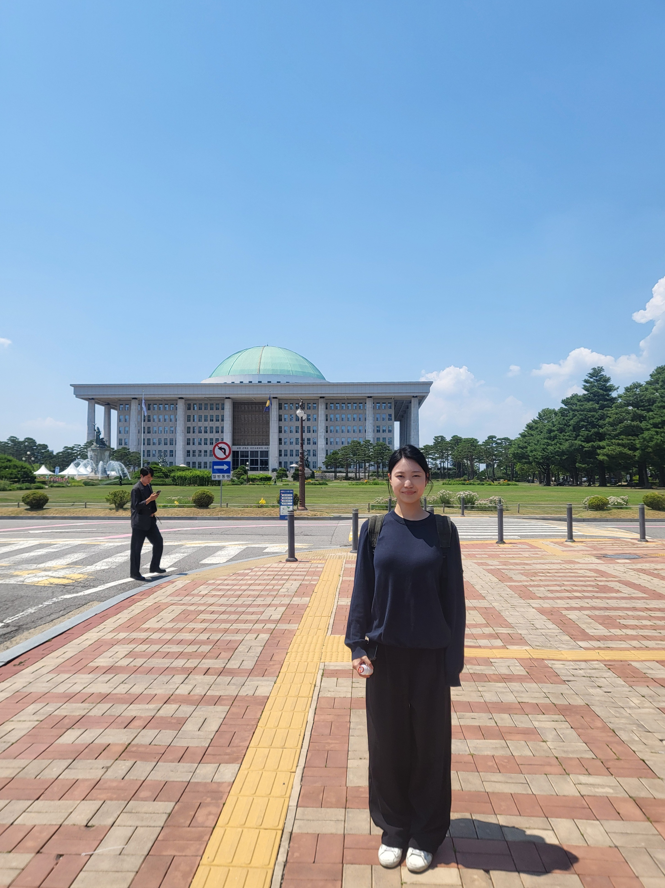
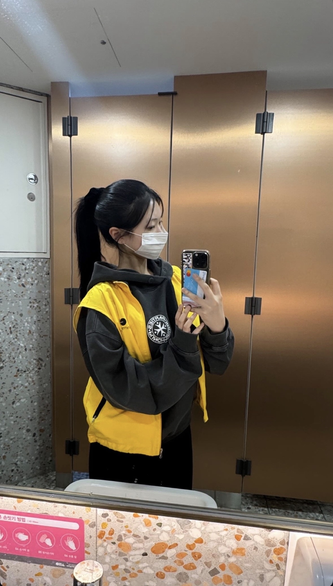

Moments and experiences that have shaped who I am and who I aspire to become.
Hi! I'm Sol Lee, a senior at Fayston Preparatory School in South Korea.
I've always been curious about the stories behind the news. I enjoy learning about politics, understanding different perspectives and sharing stories that matter. My dream is to become a journalist who helps people better understand the world around them.
I believe that pursuing a dream means taking every opportunity to grow. At school, I served as a morning broadcast anchor and the main MC for our annual Christmas concert. Whether I was delivering announcements or speaking in front of an audience, I enjoyed connecting with people through my voice.
My passion for journalism also led me beyond the classroom. During my internship at the Korean National Assembly's broadcasting station, I worked alongside reporters and learned how news is prepared behind the scenes. This experience showed me the responsibility that comes with sharing information with the public.
Outside of journalism, I enjoy playing the violin and speed skating. Both have been important parts of my life and have taught me patience and dedication.
Through The Sol Archive, I hope to share not only what I have accomplished but also the experiences that continue to shape who I am and the journalist I hope to become.

Broadcasting & Newsroom

Hospital Volunteering
Broadcasting, Leadership & Student Life
Music, Athletics & Personal Growth